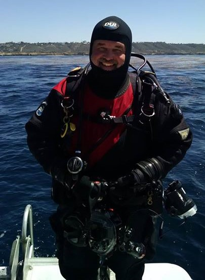

Please join us at 7:30pm
via
Online Zoom Meeting
You’ve got the camera and lights, but so does everyone else. How do you get your images and video to stand out among the crowd? Snoots are great, but that’s just the beginning. During this session, Ryan King will explore some simple tools / techniques to help improve the stories your images tell.
Ryan started diving in 1990 and has never looked back. For over 25 years, Ryan has been diving, teaching, and photographing marine life, caves, and wrecks from Canada to the Caribbean. He has a passion for exploration and helping others enjoy and appreciate the underwater world.
Please join us for the MetroWest Dive Club's General Meeting (via Zoom) for the presentation.
We will be holding a FREE Raffle eligible to all who join our Zoom Meeting and stay through to the end of the presentation.
Click here to join the Zoom Meeting
Password: 002707
NOTE: For security purposes, people joining will land in a waiting room before being let into the meeting at 7:30. Also, we will be "locking the door" around 7:45, at which time no one else will be able to join.
Upcoming Speakers and Topics*
| November | Richie Kohler | TBD |
| December | Eric Takakjian | Dangerous Shallows: in Search of Randall S Peffer the Ghost Ships of Cape Cod |
*All speakers and topics subject to change without notice.
The MetroWest Dive Club (MWDC) is dedicated to promoting fun, safe diving, and introducing and familiarizing members with new dive sites. We are committed to encouraging good relations with our coastal neighbors through courtesy and good diving etiquette, and getting involved with community activities.
The MWDC is not affiliated with any retailer, vendor, or manufacturers. We are a large group of sport divers with a wide range of scuba diving interests. Club members can help direct you to the many training classes locally available.
MetroWest Dive Club meetings are held on the second Tuesday of each --- month at the Courtyard Marriott on Speen Street in Natick. Meetings are free and guests are welcome, divers and non-divers alike. MWDC meetings start at 7:30 pm but members often meet socially at the bar from 6:30 to 7:30pm.
The Courtyard Marriott in Natick is at 342 Speen Street, Natick, MA.
From the Mass Pike (I90) take Exit 13. Bear left after the toll booth and around the loop to head east on Route 30. At the first set of lights take a right and the Courtyard Marriott is a short distance on your right. A map is also provided below for your convenience.